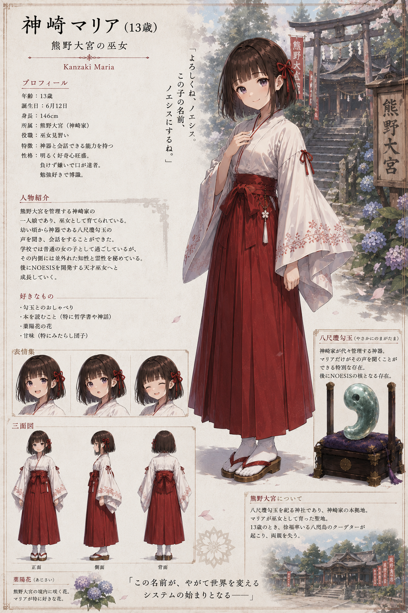
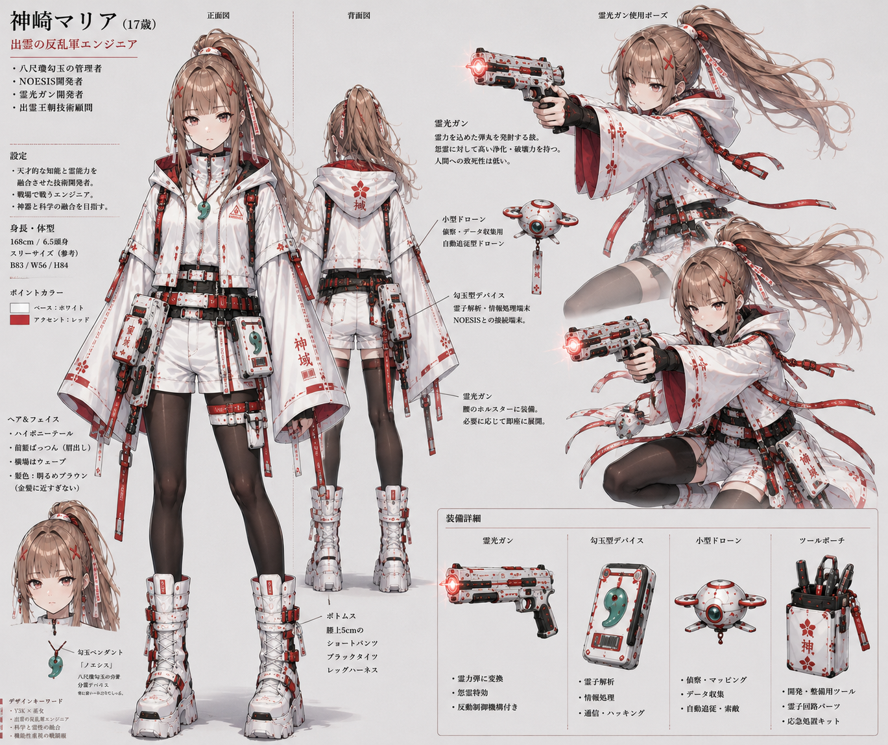
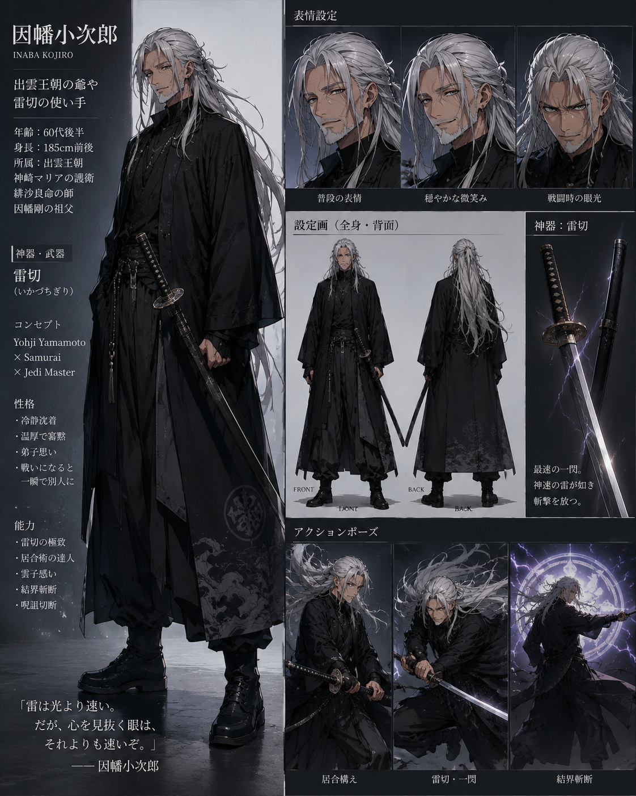

NOESIS
Official Codex
Top
World
Characters
Artifacts
Factions
Story
Timeline
Music
Images
Top
/ Images
Images
設定画、立ち絵、戦闘イラスト、MVイラストをキャラクター別に管理。
神崎蓮
設定画
プロフィール設定画
立ち絵
アイコン
因幡剛
設定画
キャラクター設定画
月乃瀬澄華
設定画
プロフィール設定画
立ち絵
巫女ビジュアル
戦闘イラスト
月花鏡千里眼・月読必中
天城煌
設定画
プロフィール設定画
立ち絵
キャラクター設定画
安倍天明
設定画
キャラクター設定画
白河智史
設定画
月乃瀬高校3年生 / 将棋プロ三冠
金城レオ
設定画
因幡組ビジュアル
鬼塚刀真
設定画
剣士ビジュアル
神崎マリア

設定画
13歳・熊野大宮の巫女

設定画
17歳・出雲の反乱軍エンジニア
MVイラスト
38歳・第一章の母の声
因幡小次郎

設定画
出雲王朝の爺や / 雷切の使い手
緋沙良命
設定画
17歳・出雲王朝の皇子
徐福
戦闘イラスト
熊野大宮炎上時の徐福
那須悠一
戦闘イラスト
月乃瀬神社の夜戦ビジュアル
村雨響香
設定画
キャラクター設定画
平将門
設定画
怨霊王設定画
巴朱莉
設定画
キャラクター設定画
Story Art
扉絵
第二章 神崎マリア編 ― 出雲霊戦記 ―